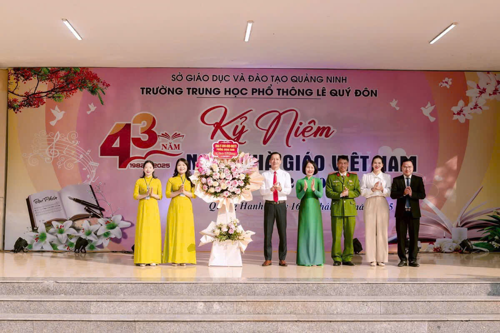
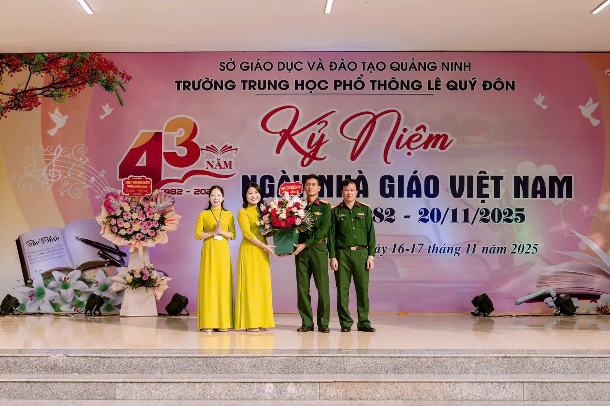
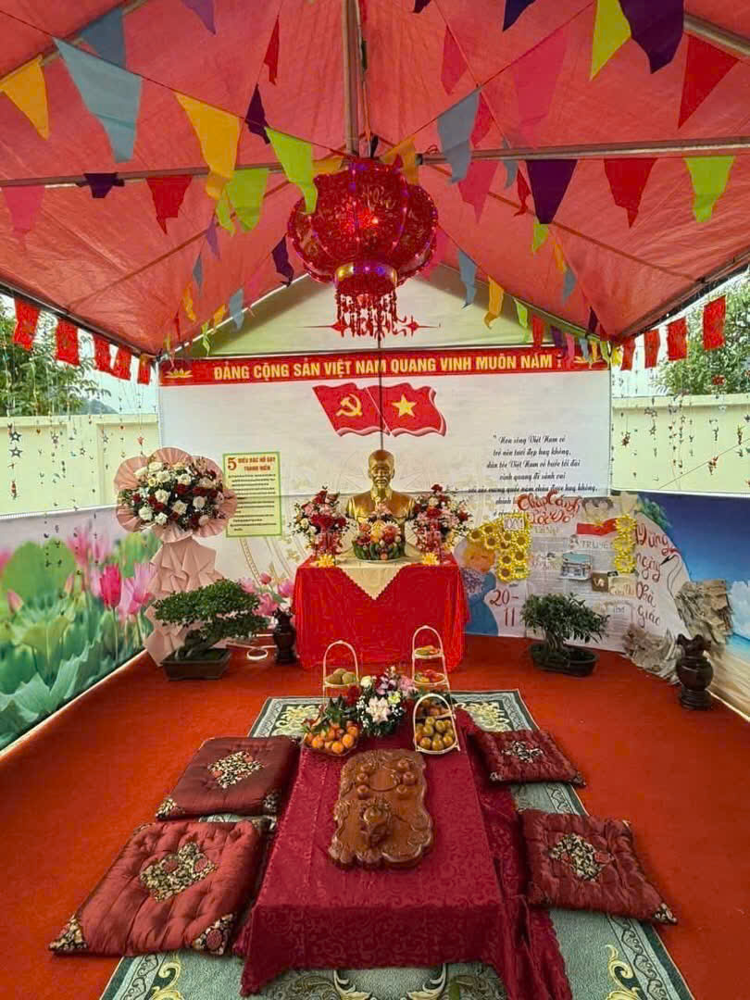
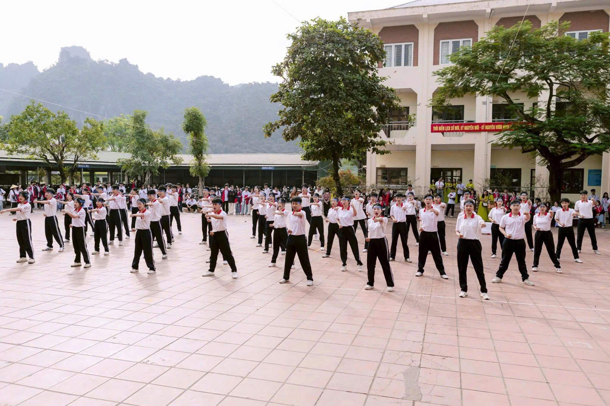
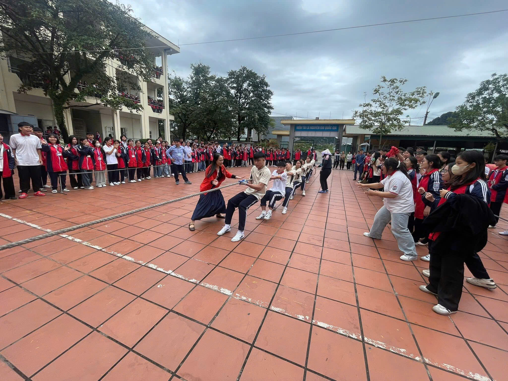
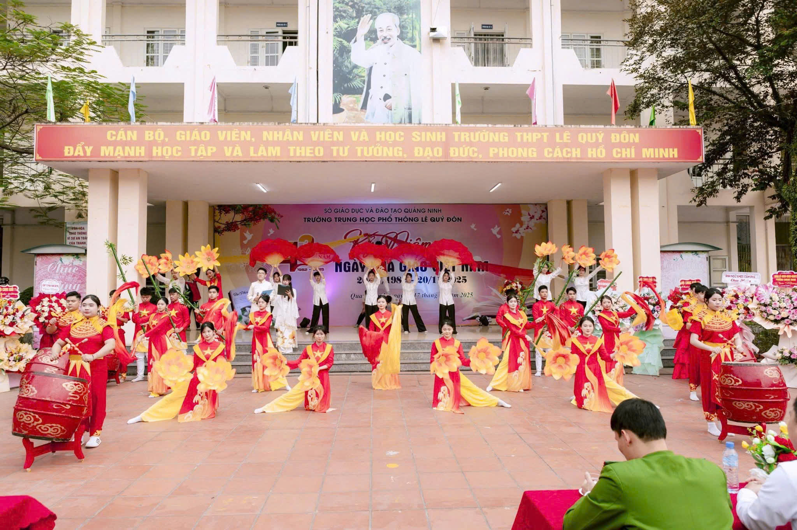

Lời Mở Đầu
Tháng mười một về mang theo những cảm xúc thân thương và ấm áp – đó là thời khắc để bao thế hệ học trò hướng lòng mình về Ngày Nhà giáo Việt Nam 20/11, ngày tri ân những người thầy, người cô đã âm thầm cống hiến cho sự nghiệp trồng người. Tờ báo tường này là món quà tinh thần nhỏ bé nhưng chan chứa tình cảm, lòng biết ơn và sự kính trọng của tập thể học sinh chúng em gửi tới quý thầy cô – những người đã thắp sáng tri thức và chắp cánh ước mơ cho chúng em trên hành trình trưởng thành.
Ý Nghĩa Của Ngày 20/11
-Ngày 20/11 – Ngày Nhà giáo Việt Nam là dịp đặc biệt để chúng ta bày tỏ lòng biết ơn sâu sắc tới thầy cô giáo – những người đã tận tâm dạy dỗ, dìu dắt chúng ta trên con đường tri thức và làm người. Thầy cô không chỉ truyền đạt kiến thức mà còn dạy chúng ta đạo lý, lối sống và những giá trị tốt đẹp. Những bài học ấy sẽ luôn theo chúng ta suốt cuộc đời. Ngày 20/11 là dịp để mỗi học sinh thể hiện sự tri ân bằng những hành động giản dị nhưng ý nghĩa như lời chúc, bông hoa hay sự cố gắng trong học tập. Đó chính là món quà quý giá nhất dành cho thầy cô. Nhân ngày Nhà giáo Việt Nam, em xin kính chúc thầy cô luôn mạnh khỏe, hạnh phúc và thành công trong sự nghiệp trồng người.
Hôm này ngày 20/11 Trường THPT Lê Quý Đôn vô cùng vinh dự khi nhận được sự quan tâm sâu sắc của các cấp chính quyền, các ban ngành, đoàn thể, cơ quan,tổ chức,các đơn vị kết nghĩa trên địa bàn phường Quang


Một số hoạt động trong ngày 20/11
-Hòa chung không khí thi đua sôi nổi chào mừng Ngày Nhà giáo Việt Nam 20/11, hôm nay nhà trường tổ chức nhiều hoạt động vui tươi, bổ ích nhằm tạo sân chơi lành mạnh và tăng cường tinh thần đoàn kết cho học sinh. Các hoạt động bao gồm kéo co – thể hiện sức mạnh tập thể và tinh thần đồng đội; võ nhạc – mang đến những màn biểu diễn khỏe khoắn, đẹp mắt; thổi cơm – tái hiện nét đẹp văn hóa truyền thống; và cắm trại – giúp học sinh rèn luyện kỹ năng sinh hoạt, làm việc nhóm và sáng tạo. Thông qua các hoạt động này, học sinh không chỉ có những giây phút vui chơi ý nghĩa mà còn thể hiện tình cảm, lòng tri ân đối với thầy cô giáo nhân ngày lễ đặc biệt 20/11.
Một Số Hình Ảnh Của Hoạt




Video Về Tiết Mục Văn Nghệ Lớp 12A6
Góc Thơ
Tháng mười một đến dịu dàng thay,
Ơn thầy nghĩa cô khắc dạ này.
Bảng đen phấn trắng bao tâm huyết,
Dẫn lối chúng em vững bước dài
Góc Bình Luận